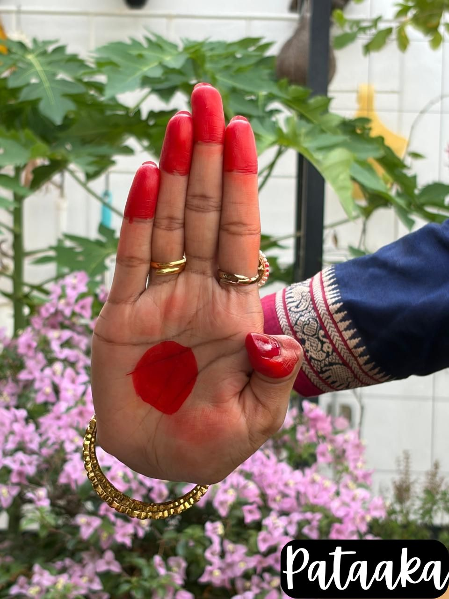
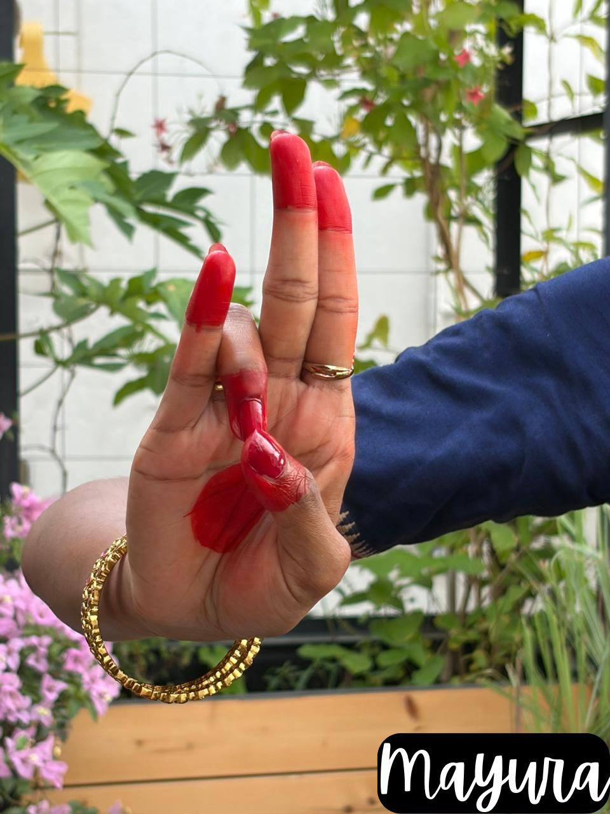
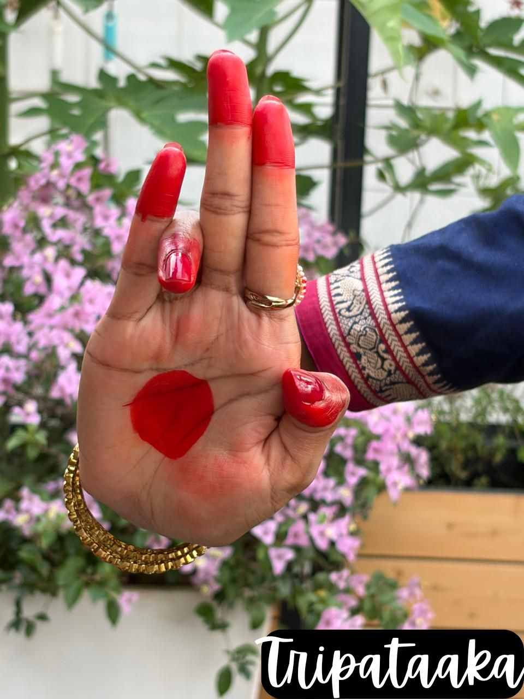

Pataka
Flag. Forest, clouds, river, opening a door, blessing.
The Vocabulary of Dance
In Bharatanatyam, the hands are never still. They tell stories, depict nature and symbolize abstract concepts. These gestures, known as Hastas or Mudras, form a precise visual language.
Illustrated examples of key hand gestures from Bharatanatyam's repertoire.

One of the most widely used mudras, symbolizing a flag or forest.

Peacock gesture used for beauty, birds and decorative imagery.

A versatile mudra representing trees, crowns and arrows.
A Mudra (literally "seal" or "sign") in dance is a codified hand gesture. Unlike casual gesticulation, each mudra has a specific definition and a range of meanings prescribed by texts like the Abhinaya Darpana.
When combined with eye movements and body posture, a single hand gesture can transform from a blooming lotus to a full moon, or from a formidable weapon to a gentle caress.
The building blocks of dance vocabulary. Here are some of the most foundational single-hand gestures.
Flag. Forest, clouds, river, opening a door, blessing.
Three parts of flag. Crown, tree, arrow, thunder.
Half flag. Leaves, knife, river bank, flag.
Scissors. Separation, lightning, death.
Peacock. Peacock, creeper, tilak, hair.
Half moon. Moon, spear, strangling, worship.
Bent. Drinking poison/nectar, storm.
Parrot's beak. Shooting an arrow, spear, violent mood.
Fist. Grasping, combat, firmness.
Spire. Bow, pillar, silence, husband.
Elephant apple. Holding veil, cymbals, milking cows.
Bracelet opening. Plucking flowers, necklace, speech.
Needle. One, indicating, world, sun.
Digit of moon. Moon, face, Ganges river.
Lotus bud. Fruit, ball, bud, mango.
Snake hood. Snake, sprinkling water, offering.
Deer head. Deer, female face, calling beloved.
Lion face. Lion, rabbit, coral, pearl.
Tail. Lakucha fruit, bells, partridge.
Lotas. Full blown lotus, moon, beauty.
Four. Musk, little, gold, copper.
Bee. Bee, parrot, crane, cuckoo.
Swan face. Swan, purity, painting.
Swan wing. Bridge, number six.
Pincers. Generosity, sacrificial offering.
Bud. Eating, bud, navel, plaintain flower.
Rooster. Rooster, crane, crow, writing.
Trident. Bilva leaf, Trinity.
Gestures that require the union or coordinated movement of both hands to convey meaning.
Salutation. Greeting, devotion, prayer.
Dove. Respect, acceptance, concealment.
Crab. Crowd, blowing conch, stretching.
Crossed. Love, shyness, crocodile.
Swing. Beginning a dance, rest, ease.
Flower basket. Offering lights/flowers, accepting water.
Embrace. Embrace, modesty, arm ornament.
Linga. Lord Shiva.
Link of increase. Coronation, worship, marriage.
Crossed scissors. Stems, branches, hill top.
Cart. Rakshasas (demons).
Conch. Conch shell.
Discus. Wheel, Vishnu's weapon.
Casket. Concealing things, box.
Noose. String, chains, quarrel.
Bond. Affection, conversation.
Fish. Fish, Matsya Avatar.
Turtle. Turtle, Kurma Avatar.
Boar. Boar, Varaha Avatar.
Eagle. Garuda (Vishnu's vehicle), birds.
Serpent tie. Snakes, bindaing pairs.
Bed. Bed, palanquin.
Pair of birds. Pair of birds.
Dissimulation. Eretic, holding a play ball, bosom.
Knowing the shape of a mudra is only the beginning. The Viniyoga shlokas describe exactly where and how each gesture is used.
A single mudra like Pataka has dozens of viniyogas — from "Natyarambhe" (beginning of dance) to "Vanirvasthu" (forest things). The meaning changes based on the context of the story, the position of the hand relative to the body, and the accompanying facial expression.